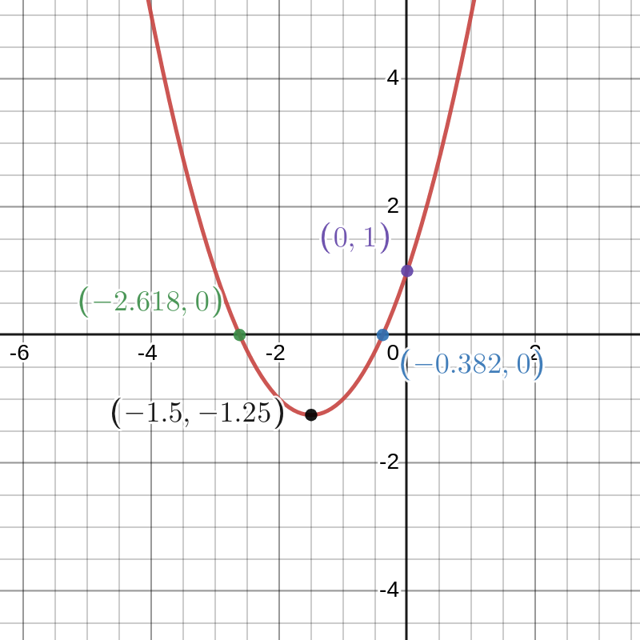
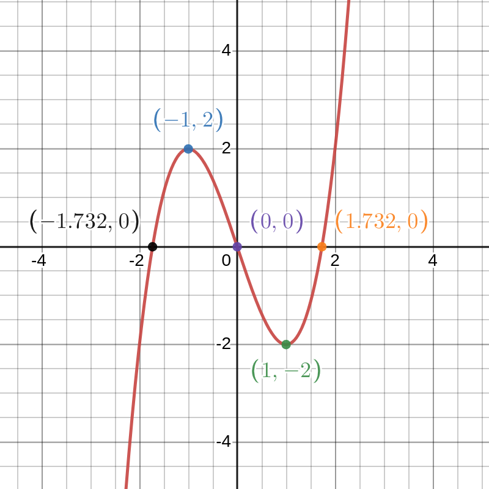

Exercise Set 8 Answers
Find the first and second dervatives of the following expressions.
- \(y=3x^5+2x-1\)
- \(y=4x^{-1}\)
- \(y=x^{\frac{1}{2}}+x^{\frac{1}{3}}\)
- \(y=x^7+\sin(x)\)
- \(y=e^x+5\)
Answers:
\[\begin{align*} y &= 3x^5 + 2x -1$\\ \frac{dy}{dx} &= 15x + 2\\ \frac{d^2y}{dx^2} &= 15 \end{align*}\]
\[\begin{align*} y&=4x^{-1}\\ \frac{dy}{dx} &= -4x^{-2}\\ \frac{d^2y}{dx^2} &= 8x^{-3} \end{align*}\]
\[\begin{align*} y &= x^\frac{1}{2} + x^\frac{1}{3}\\ \frac{dy}{dx} &= \frac{1}{2}x^{-\frac{1}{2}} + \frac{1}{3}x^{-\frac{2}{3}}\\ \frac{d^2y}{dx^2} &= -\frac{1}{4}x^{-\frac{3}{2}} + -\frac{2}{9}x^{-\frac{5}{3}} \end{align*}\]
\[\begin{align*} y &= x^6 \sin(x)\\ \frac{dy}{dx} &= 7x^6 + \cos (x)\\ \frac{d^2y}{dx^2} &= 42x^5 - \sin(x) \end{align*}\]
\[\begin{align*} y &= e^x + 5\\ \frac{dy}{dx} &= e^x\\ \frac{d^2y}{dx^2} &= e^x \end{align*}\]
Find the derivative of \((1+2x)(x-x^2)\) in two ways: first, expand and find the derivative; second, use the product rule. Your answers should agree!
Answer:
Method 1, expand and find the derivative: \[\begin{align*} y &= (1+2x)(x-x^2)\\ &=x - x^2 + 2x^2 - 2x^3\\ &=-2x^3 + x^2 + x\\ \frac{dy}{dx} &= -6x^2 + 2x + 1 \end{align*}\]
Method 2, product rule. Let \(y=h(x) = f(x)g(x)\) where \(f(x) = (1+2x)\) and \(g(x) = (x-x^2)\) \[\begin{align*} y &= (1+2x)(x-x^2)\\ y' &= 2(x-x^2)+(1+2x)(1-2x)\\ &=-6x^2 + 2x + 1 \end{align*}\] And as expected, we have obtained the same answer with both methods.
Use the product rule to show that \((af)'(x)=af'(x)\) for any differentiable function \(f\) and number \(a\).
Answer:
We wish to show that \((af)'(x) = a f(x)\), or in Leibniz notation, \(\frac{d}{dx}af(x)=a \frac{d}{dx}f(x)\). This can be shown using product rule, where one of the functions is \(f(x)\) and the other is simply the constant function \(g(x)=a\) \[\begin{align*} (gf)'(x) &= g(x)' f(x) + g(x)f'(x)\\ &= 0f(x)+g(x)f'(x)\\ &=a f'(x) \end{align*}\] or in Leibniz notation \[\begin{align*} \frac{d}{dx}(g(x)f(x))&=\frac{d}{dx}(g(x))f(x)+g(x)\frac{d}{dx}f(x)\\ &=0f(x)+g(x)\frac{d}{dx}f(x)\\ &=a\frac{d}{dx}f(x) \end{align*}\] using \(g'(x)=\frac{d}{dx}g(x)=0\) because the derivative of a constant function is zero.
Use the chain rule to show that \((f(ax+b))'=af'(ax+b)\) for any differentiable function \(f\) and numbers \(a\) and \(b\).
Answer:
To show \((f(ax+b))' = a f'(ax+b)\), we can recognise the derivative as an application of chain rule: \((f(g(x)))' = g'(x)f'(g(x))\), where \(g(x) = ax+b\). Since \(g'(x) = a\), we have that \[(f(ax+b))'= a (f'(ax+b))\]
Find the derivatives of the following functions (you may like to use the additional rules you have just derived in the previous two questions).
- \(f(x)=\sqrt{2}\sin(x)\)
- \(f(x)=\ln(2)\ln(x)\)
- \(f(x)=\cos(3x)\)
- \(f(x)=\sin(5x+2)\)
- \(f(x)=3e^{2x}\)
- \(f(x)=3e^{2x+1}\)
Answers:
- \[f(x)= \sqrt{2} \sin (x)\\ f'(x) = \sqrt{2} \cos (x)\]
- \[f(x) = \ln (2) \ln(x)\\ f'(x) = \frac{\ln 2}{x}\]
- \[f(x) = \cos (3x)\\ f'(x) = -3 \sin (3x)\]
- \[f(x) = \sin (5x+2)\\ f'(x) = 5 \cos (5x+2)\]
- \[f(x) = 3e^{2x}\\ f'(x) = 6e^{2x}\]
- \[f(x) = 3e^{2x+1}\\ f'(x) = 6e^{2x+1}\]
Find the derivatives of the following functions using the product rule.
- \(f(x)=3x^2\sin(x)\)
- \(f(x)=\sin(x)\cos(x)\)
- \(f(x)=(x^3-x)e^x\)
- \(f(x)=x\ln(x)\)
Answers:
- \[f(x) = 3x^2 \sin (x)\\ f'(x) = 6x \sin(x) + 3x^2 \cos(x)\]
- \[ f(x) = \sin(x)\cos(x) \quad(=\frac{1}{2}\sin(2x))\\ f'(x) = \cos^2(x) - \sin^2(x) = \cos(2x)\]
- \[f(x) = (x^3 - x)e^x\\ f'(x) = (3x^2 - 1)e^x + (x^3 - x)e^x\\ = (x^3 + 3x^2 - x - 1)e^x\]
- \[f(x) = x \ln (x)\\ f'(x) = \ln(x) + 1\]
Find the derivatives of the following functions using the chain rule.
- \(f(x)=\cos(x^2)\)
- \(f(x)=\sin(\cos(x))\)
- \(f(x)=e^{\sin(x)}\)
- \(f(x)=\sin^{100}(x)\)
Answers:
These are all applications of chain rule for taking derivatives of functions of the from \(f(x) = h(g(x))\)
- This is a composition of two functions, \(h(x) = \cos(x)\), \(g(x) = x^2\) \[f'(x) = -2x \sin(x^2)\]
- Taking the derivative of \(h(g(x))\) where \(h(x) = \sin(x)\) and \(g(x) = \cos(x)\) \[f'(x) = -\sin(x)\cos(\cos(x))\]
- \(f'(x) = (h(g(x)))'\) where \(h(x) = e^x\) and \(g(x) = \sin(x)\) \[f'(x) = \cos(x)e^{\sin(x)}\]
- Here, \(h(x) = x^{100}\) and \(g(x) = \sin(x)\) \[f'(x) = 100\cos(x)\sin^{99}(x)\]
Find the derivatives of the following functions using the quotient rule.
- \(f(x)=\dfrac{1}{1+x^2}\)
- \(f(x)=\dfrac{x^2}{1+x^2}\)
- \(f(x)=\dfrac{x^3}{e^{3x}}\)
- \(f(x)=\dfrac{x-\sqrt{x}}{x^2}\)
- \(f(x)=\dfrac{\sin(x)}{\cos(x)}\)
Answers:
- \(f(x) = \frac{1}{1+x^2}\). Applying quotient rule: \[f'(x) = \frac{-2x}{(1+x^2)^2}\]
- \(f(x) = \frac{x^2}{1+x^2}\). \[f'(x) = \frac{2x(1+x^2) - x^2(2x)}{(1+x^2)^2} = \frac{2x}{(1+x^2)^2}\]
- \(f(x) = \frac{x^3}{e^{3x}}\) \[f'(x) = \frac{3x^2 \times e^{3x} - x^3\times 3e^{3x}}{e^{6x}} = \frac{3(x-1)x^2}{e^{3x}}\]
- \(f(x) = \frac{x-x^{\frac{1}{2}}}{x^2}\) \[f'(x) = \frac{(1-\frac{1}{2}x^{-\frac{1}{2}})\times x^2 - (x-x^\frac{1}{2})\times 2x}{x^4}\\ = \frac{x^2 - \frac{1}{2}x^{\frac{3}{2}} - 2x^2 + 2x^{\frac{3}{3}}}{x^4}\\ =\frac{-x^2 + \frac{3}{2}x^{\frac{3}{2}}}{x^4} = -x^{-2} + \frac{3}{2}x^{-\frac{5}{2}}\]
- \(f(x) = \frac{\sin(x)}{\cos{x}}\) \[f'(x) = \frac{\cos^2(x) + \sin^2(x)}{\cos^2 (x)} = \frac{1}{\cos^2(x)} = \sec^2(x)\]
Find the derivatives of the following functions.
- \(f(x)=\sin^2(\sin(x))\)
- \(f(x)=\ln(x^2)\)
- \(f(x)=a^x\) for any \(a>0\)
- \(f(x)=e^x\sin(x^2)\)
Answers:
We recognise this as a composition of three functions \(f(x)=s(t(u(x)))\) with \(u(x)=\sin(x)\) \(t(x)=\sin(x)\) \(s(x)=x^2\) First applying the chain rule to \(s\) and \(t\) \[\frac{df(x)}{dx}=\frac{ds(t)}{dt}\frac{dt(u(x))}{dx}\] Then applying the chain rule to \(t\) and \(u\) \[\frac{df(x)}{dx}=\frac{ds(t)}{dt}\left(\frac{dt(u)}{du}\frac{du(x)}{dx}\right)\] so we have \[\frac{df(x)}{dx}=2\sin(\sin(x))\times \cos(\sin(x))\times\cos(x).\]
We could first turn the power into a product to obtain \(f(x)=2\ln(x)\), then the derivative is \[\frac{df(x)}{dx}=2\frac{1}{x}.\]
Alternatively, we could use the chain rule. Letting \(u(x)=x^2\) we have \[\begin{align*} \frac{df(x)}{dx}&=\frac{\ln(u)}{du}\frac{du(x)}{dx}\\ &=\frac{1}{u}2x\\ &=\frac{2x}{x^2}\\ &=\frac{2}{x}. \end{align*}\]
We can use the natural logarithm to obtain \[f(x)=e^{\ln(a^x)}=e^{x\ln(a)}.\] Then \[\frac{df(x)}{dx}=\ln(a)e^{x\ln(a)}=\ln(a)e^{\ln(a^x)}=\ln(a)a^x.\]
We have \(f(x)=s(x)t(u(x))\) with \(s(x)=e^x\), \(t(x)=\sin(x)\), \(u(x)=x^2\). We have a product and a composition. First applying the product rule \[\frac{df(x)}{dx}=\frac{ds(x)}{dx}t(u(x))+s(x)\frac{dt(u(x))}{dx}.\] Then appying the chain rule \[ \frac{df(x)}{dx}=\frac{ds(x)}{dx}t(u(x))+s(x)\frac{dt(u)}{du}\frac{du(x)}{dx}.\] So, we have \[\begin{align*} \frac{df(x)}{dx}&=e^x\sin(x^2)+e^x\cos(x^2)2x\\ &=e^x(\sin(x^2)+2x\cos(x^2)) \end{align*}\]
Show that \(\frac{d}{dx}\sinh(x)=\cosh(x)\) and \(\frac{d}{dx}\cosh(x)=\sinh(x)\).
Answer:
\(\dfrac{d}{dx}\sinh(ax)=\dfrac{d}{dx}\dfrac{e^{ax}-e^{-ax}}{2}=\dfrac{ae^{ax}-(-a)e^{-ax}}{2}=a\dfrac{e^{ax}+e^{-ax}}{2}=a\cosh(ax)\) and \(\dfrac{d}{dx}\cosh(ax)=\dfrac{d}{dx}\dfrac{e^{ax}+e^{-ax}}{2}=\dfrac{ae^{ax}+(-a)e^{-ax}}{2}=a\dfrac{e^{ax}-e^{-ax}}{2}=a\sinh(ax)\).
Find all local maxima and minima of the following functions. Are there any global maxima or minima? Also sketch their graphs.
- \(f(x)=x^2+3x+1\)
- \(f(x)=x^3-3x\)
Answers:
For graph sketching we want to find the following:
- Where the curve crosses the \(x\)-axis and \(y\)-axis.
- The coordinates of any local maxima and minima.
- The general shape of the curve.
- Any asymptotes.
We have \(f'(x)=2x+3\). Stationary points are where \(f'(x)=0 \implies x=\frac{-3}{2}\).
To check for local maxima and minima we find the second derivative: \(f''(x)=2\). Since this is always postive, we only have one local minimum at \(x=\frac{-3}{2}\), \(y=-\frac{5}{4}\). From the dominant \(x^2\) term being positive, we see this is a parabola which opens upwards, hence this minimum will be the global minimum and there are no local or global maxima.
The curve crosses the \(x\)-axis where \(f(x)=0\). Using the quadratic formula: \[x=\frac{-3\pm\sqrt{9-4}}{2}=\frac{-3\pm\sqrt{5}}{2}\] so the approximate solutions are \(x_1=-2.618\) and \(x_2=-0.382\).
The curve crosses the \(y\)-axis at \(f(0)=1\).
Sketch:

We have \(f'(x)=3x^2-3\). Stationary points are where \(f'(x)=0 \implies x=\pm 1\).
To check for local maxima and minima we find the second derivative: \(f''(x)=6x\). This implies that \((-1,2)\) is a local maximum and \((1,-2)\) is a local minimum. From the dominant \(x^3\) term, we see that \(f(x)\) can take arbitrarily large positive and negative values, hence there are no global maxima or minima.
The curve crosses the \(x\)-axis where \(f(x)=0\). Factorising the cubic, we have: \[f(x)=x(x-\sqrt{3})(x+\sqrt{3})\] so the solutions are \(x_0=0\) and approximately \(x_1=-1.732\), \(x_2=1.732\).
The curve crosses the \(y\)-axis at \(f(0)=0\).
Sketch:

A particle moving in a straight line has displacement \(x\) as a function of time \(t\geq 0\) given by \[x=-t^{3}+5t^{2}+t.\]
- Find the velocity \(v\) and acceleration \(a\).
- What is the initial velocity?
- What is the largest positive displacement?
- At what time does the particle return to the origin?
Answers:
\[\begin{align*} x &= -t^3 + 5t^2 + t\\ v &= \frac{dx}{dt} = -3t^2 + 10t + 1\\ a &= \frac{dv}{dt} = \frac{d^2x}{dt^2} = -6t + 10 \end{align*}\]
\(v(0) = 1\)
To find the largest positive displacement, we must find the turning points of \(x\). These times are found by solving for \(v(t) = 0\) \[v = -3t^2 + 10t + 1 = 0\\ \text{solved by } t = \frac{5}{3}\pm \frac{2\sqrt{7}}{3}\] The solution \(\frac{5}{3}-\frac{2\sqrt{7}}{3}\) is in negative time, and the shape of the dominant \(-t^3\) term in \(x\) suggests that the maximum will be at time \(\frac{5}{3}+\frac{2\sqrt{7}}{3}\), but it is prudent to check the second derivative of \(x\) (which is \(a\)). \[a(\frac{5}{3}-\frac{2\sqrt{7}}{3}) = 4\sqrt{7}\\ a(\frac{5}{3}+\frac{2\sqrt{7}}{3}) = -4\sqrt{7}\] And hence the maximum displacement does indeed occur at time \(t=\frac{5}{3}+\frac{2\sqrt{7}}{3}\), and \(x(\frac{5}{3}+\frac{2\sqrt{7}}{3}) \approx 21.9\)
To find when the particle returns to the origin, we must solve for \(x(t) = 0\). \[-t^3 + 5t^2 + t = 0\\ -t^2 + 5t + 1 = 0\\ t = \frac{5 \pm \sqrt{29}}{2}\] Where one solution is for a negative \(t\), so the particle returns to the origin at \(t = \frac{5 +\sqrt{29}}{2} \approx 5.19\)
Find the points of inflection of the following functions.
- \(f(x)=\dfrac{x^3}{3}-\dfrac{x^2}{2}-2x+5\)
- \(f(x)=x+\sin(x)\)
Answer:
To find points of inflection, we find the points at which the second derivative is zero and the third derivative is non-zero. \[f(x) = \frac{x^3}{3} - \frac{x^2}{2} - 2x + 5\\ f'(x) = x^2 - x - 2\\ f'(x) = 0 = x^2 - x- 2 = (x+1)(x-2)\\ f''(x) = 2x-1\\ f'''(x)=2\] The second derivative is zero at \(x=\frac{1}{2}\), and the second derivative also changes signs either side of this point. Alternatively we simply note that \(f''(x=\frac{1}{2}) = 0\) and \(f'''(x=\frac{1}{2})\neq 0\), so it is an inflection point by the Third Derivative Test for Inflection Points.
\[f(x) = \sin (x) + x\\ f'(x) = \cos(x)+1\] So there are stationary points at \(x = \frac{\pi}{2} + 2\pi k\) for any integer \(k\). \(f''(x) = -\sin(x)\), which is zero whenever \(x = k\pi\) for integer \(k\). The third derivative, \(f'''(x) = -\cos(x)\) is non zero whenever \(x \neq \frac{\pi}{2} + 2\pi k\). So the points of inflection, by the Third Derivative Test, are whenever \(x=2\pi k\) for integer \(k\). Note that half of these are also stationary points.
A rectangular box with no lid is made from a thin sheet of metal. The base is \(2x\text{ mm}\) long and \(x\text{ mm}\) wide, and the volume is \(48000\text{ mm}^3\). Show that the area \(A\) of metal used is given by \[A=2x^2+144000x^{-1} \text{ mm}^2.\] Find the value of \(x\) for which the minimum area of metal is used along with the value of the minimum area.
Answer:
The volume of the box is given by \(2x\times x \times h = 48000\text{ mm}^3\). We write the height in terms of volume and base area: \(h = \frac{48000}{2x^2}\) The area of metal used is given by \[A = 2x^2 + 2\times 2x\times \frac{48000}{x^2} + 2 \times x \times \frac{48000}{2x^2}\\ =2x^2 + \frac{96000}{x} + \frac{48000}{x}\\ = 2x^2 + \frac{144000}{x}\] We wish to minimise the area of metal used to create the appropriate volume of box. This requires finding the minimum of the Area function. \[A' = 4x - \frac{144000}{x^2}\\ A' = 0 \Rightarrow 4x^3 = 144000\\ \Rightarrow x = 33.019mm\] We check this is a minimum by looking at the second derivative \[A''=4+\frac{288000}{x^3}\] which is positive for any postive \(x\) value, hence we do have a minimum by the second derivative test. The corresponding area is \[ A= 6541.63\text{mm}^3.\]